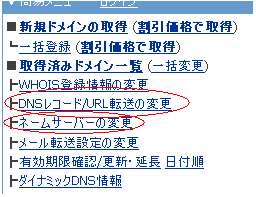
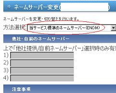
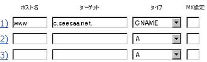
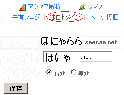
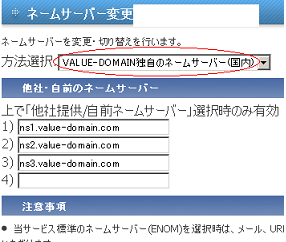
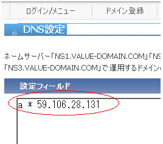
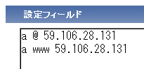
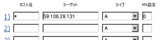

シーサーブログを独自ドメイン化
シーサーブログは独自ドメイン対応の無料ブログサービスです。
長期的に運営する場合は、できるだけ最初に独自ドメイン化しておくことをおすすめします。
費用は.com や.netで年間1000円程度、jp ドメインの場合は3500円程度です。
■ ブログを独自ドメイン化する利点
- ドメインの所有権が自分になる
- 自分で決めたurlが使える
- SEO対策に有利。アクセスアップしやすい
- サブドメインを無数に追加できる
- メールアドレスを無数に追加できる
- 引越しの際に便利
デメリットとしては、新規で取得した独自ドメインの場合は検索エンジンでヒットしずらいこともあります。これはエイジングフィルタと呼ばれているもので、取得したてのドメインは上位表示されにくいケースもあります。
バリュードメインでの独自ドメインをシーサーブログで利用
独自ドメインをシーサーブログで使用する際は、格安ドメインの「バリュードメイン」がおすすめです。
ムームードメインでも格安ですが、どちらかというとバリュードメインの方が使いやすいです。
シーサーブログでの独自ドメイン化の手順
まだブログを作成していない場合、提供されるサブドメインで普通にシーサーブログを作成します。
すでにブログを開設している場合は、そのまま独自ドメインを取得します。
次に、バリュードメインで独自ドメインを取得しますが、「新規登録はこちら」で空きドメインを検索して好みのドメインを探します。
990円の「ローマ字.com/net」が一番ぶなんで人気も高いです。
シーサーブログに転送するので「転送機能有」を選択します。
「名義を代理公開する」で公開する登録者情報を選択できますので、個人情報を公開したくない場合は、バリュードメインでの代理情報を設定します。ちなみに、世界中にある１億以上のドメインのうち、圧倒的に多いのが.comドメイン、次に多いのがnet、orgなどの順になっています。
オークションなどでの売却の際に需要が多いのも、必然的に.comドメインということになります。-
バリュードメイン側での設定事項は「ネームサーバーの変更」と「DNSレコード/URL転送の変更」のふたつです。

ドメインを取得したらまず、取得したドメインに対してのネームサーバー(DNSサーバー)は必ず指定しなければいけません。
たいていは「ドメイン取得」のあと、そのドメインの「ネームサーバー」を決めて、「そのDNS設定をする」という手順になります。バリュードメインの場合、選択できる「ネームサーバー」には enom（海外のドメイン登録会社）とバリュードメイン独自（国内）の２種類があります。
- 標準のネームサーバー（ENOM）
- バリュードメイン独自（国内）
両者の違いについてですが、バリュードメインが海外enomの代理店？ですので、本店と支店といった感じなのでしょうか。（詳細不明）
ここではenomでの設定方法について書いておきます。まず、「メニュー - ネームサーバーの変更」から、一番上の標準のネームサーバー（ENOM）を選択して変更ボタンを押します。
デフォルトがenomなんで、たいていは「変更箇所はありません」と出るはずですが、一応ネームサーバーがenomに設定されていることを確認しておいてください。
次に、DNSレコード/URL転送の変更をします。
「メニュー」「DNSレコード/URL転送の変更」で次のように設定します。
こちらはwww付きの独自ドメインを設定する場合（確認済み）ですが、「c.seesaa.net.」の部分の最後のピリオドも忘れないようにしましょう。
wwwなしで設定する場合は、ホスト名の箇所を@にすると表示されるはず（未確認）です。
個人的な印象では、ネット上にあるドメインのうちの８割程度はwww付きで運営されている気がします。（未確認）最後に、シーサーブログ側の独自ドメイン設定をして終了です。

取得した独自ドメインを入力し、（スラッシュなどは除く。wwwありで設定した場合はwww付きで。）「マッピングの有効/無効」で有効を選択し、時間をおいて（数時間 ～ 数日）ブログを確認しましょう。
独自ドメインを取得した際のＤＮＳ設定がやっかいだと思いますが、上のバリュードメインだと案外簡単だと思います。
【以前までの設定方法：】
上のはcnameでの設定方法になってからの手順ですが、以前まではＩＰアドレスをポイントして設定する方法でした。
一応、以前までの設定方法についても残しておきます。
まず、「メニュー - ネームサーバーの変更」から、一番下の value-domain 独自のネームサーバー（国内）を選択して変更ボタンを押します。

次に、DNSレコード/URL転送の変更をします。

「メニュー」「DNSレコード/URL転送の変更」で
「a * 59.106.28.131」と入力し保存。
意味合いとしては、このドメインの任意のサブドメイン（*）のアドレス（a）はこちらのシーサーのip（59.106.28.131）を参照してくださいというニュアンスです。
上のが一番簡単ですが、サブドメインをまったく利用しない場合は、このような感じで設定してもいいかと思います。（未確認）

意味合いとしては、www 付きのドメイン（www）とwwwなしのドメイン（@）のアドレス（a）はこちらのip（59.106.28.131）を参照してくださいという感じです。
この IP アドレスは、今後、変更になるかもしれませんので、シーサーブログ側の「マッピングするドメイン名のFQDN」のヘルプ欄で確認してください。
ちなみに、ネームサーバーをenomにした場合、こちらは未確認ですが、おそらくこのようなDNS設定になるはずです。
記入の仕方は違いますが、どちらも同じ意味になります。

サブドメインも設定したい場合は、次のように設定します。
例）取得した example.com にサブドメインの blog.example.com を追加する場合。
a @ 59.106.28.131
a blog 59.106.28.131
ちなみに、取得した独自ドメインでメールを使用したい場合は、別途レンタルサーバーを契約する必要があります。
- 無料ブログと独自ドメインブログの違い
無料ブログと独自ドメインブログではどちらがいいのかというのにはいろいろな違いがあって難しいなって思います。無料ブログはサテライトブログとして利用されているものが多いようですが、実際のアクセス数からみる... - グーグルブログで独自ドメイン化
グーグルブログのbloggerでも独自ドメインが使えるようなのですが、ためしに無料ブログ比較で使用しているブログをcom.ドメイン化してみました。独自ドメインを使える無料ブログサービスはシーサーブログ... - ムームーDNSのカスタム設定(シーサーブログ)
ムームードメインでいくつか独自ドメインを取得しているんですけど、DNS設定というのが難しく、特にシーサーブログで独自ドメイン化しようとしてもうまくいかない場合が多いです。シーサーブログで独自ドメイン化... - jpドメインの個人情報や料金比較
最近サーバーをレンタルしたら、独自ドメインが無料でついて来たんで、何気にjpドメインを取ってみたんですが、jpドメインってcomやnetと比較すると何かと面倒くさいみたいなんです。汎用jpドメインは3... - ブログ引越しの重複インデックスとSEO
以前の記事で、ブログを独自ドメイン化して、新規 url に引越ししたシーサーブログのSEO効果について書いていたのですが、その後、インデックス数、複合キーワードでの検索ヒット数、総アクセス数の方がのき... - 独自ドメイン化ブログのインデックス推移
以前に、独自ドメインを取得してシーサーブログを独自ドメイン化してみたのですが、新ドメインへのインデックス移行もスムーズに完了し、ブログの引越しが無事終了したようなんです。そのブログではページランクもみ... - 独自 - サブドメインのSEOブログ構成
最近このブログを独自ドメイン化してみたのですが、独自ドメインブログは単体ではちょっと味気ないんで、サブドメインブログもくっつけてみようと思うんです。seesaa でのサブドメインブログの作り方としては...